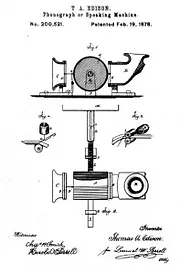
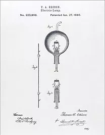
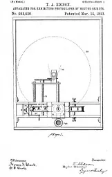
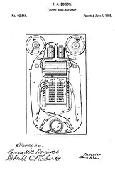

Inventions
Thomas Edison’s Inventions have made profound impacts on society.
Thomas Edison’s Inventions have made profound impacts on society. So many of Thomas Edison’s inventions are held in such high regard that he is considered the greatest inventor of all time. Following are just a few of Thomas Edison’s inventions as well as Thomas Edison’s patents that he submitted to the patent office.
Inventions
Phonograph

Considered to be the first great Thomas Edison invention, and his life-long favorite, the phonograph would record the spoken voice and play it back. When speaking into the receiver, the sound vibration of the voice would cause a needle to create indentations on a drum wrapped with tin foil. Later Edison would adopt cylinders and discs to permanently record music.
Light Bulb

Thomas Edison is most well known for his invention of the light bulb. Contrary to popular belief, Edison did not invent the light bulb; it had been around for a number of years. The electric lights at the time, however, were unreliable, expensive, and short-lived. Over twenty distinct efforts by other inventors the world over were already underway when Edison entered the light bulb invention race.
Motion Picture

Edison’s initial work in motion pictures (1888-89) was inspired byMuybridge’s analysis of motion. The first Edison device resembled his phonograph, with a spiral arrangement of 1/16 inch photographs made on a cylinder. Viewed with a microscope, these first motion pictures were rather crude, and hard to focus. Working with W. K. L. Dickson, Edison then developed the Strip Kinetograph, using George Eastman’s improved 35 mm celluloid film.
Electrographic

Edison was 22 years old and working as a telegrapher when he filed his first patent for the Electrographic Vote Recorder. The device was made with the goal of helping legislators in the US Congress record their votes in a quicker fashion than the voice vote system. To work, a voting device was connected to a clerk’s desk where the names of the legislators were embedded.